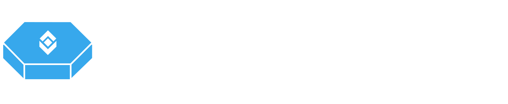
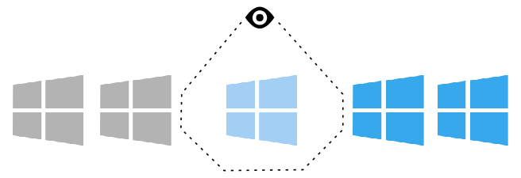
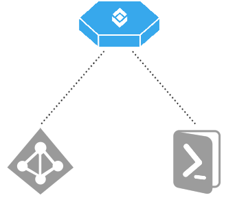
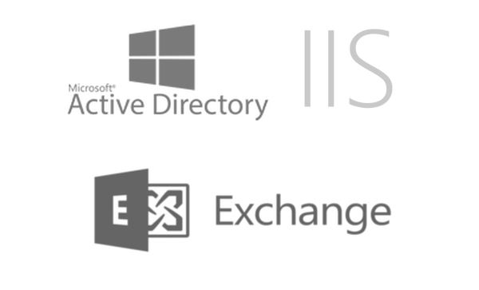

Windows Security Management
VulcanoSec is an efficient and simple solution, that can manage your Microsoft Windows Configuration Security. It has never been easier to check and securely setup your Windows machines.

Security Workflow
Discover flaws in your configuration, compare compliance snapshots over time and solve misconfiguration automatically.

Windows Security Automation
VulcanoSec allows you to establish the same security rules across your Windows fleet. It supports Windows as part of Active Directory or stand-alone setup.

Compliance Scans
Easily ensure the correct configuration across servers and applications. VulcanoSec supports Windows Server, Active Directory, Exchange and IIS.
